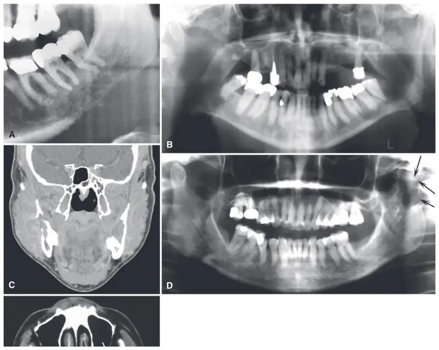
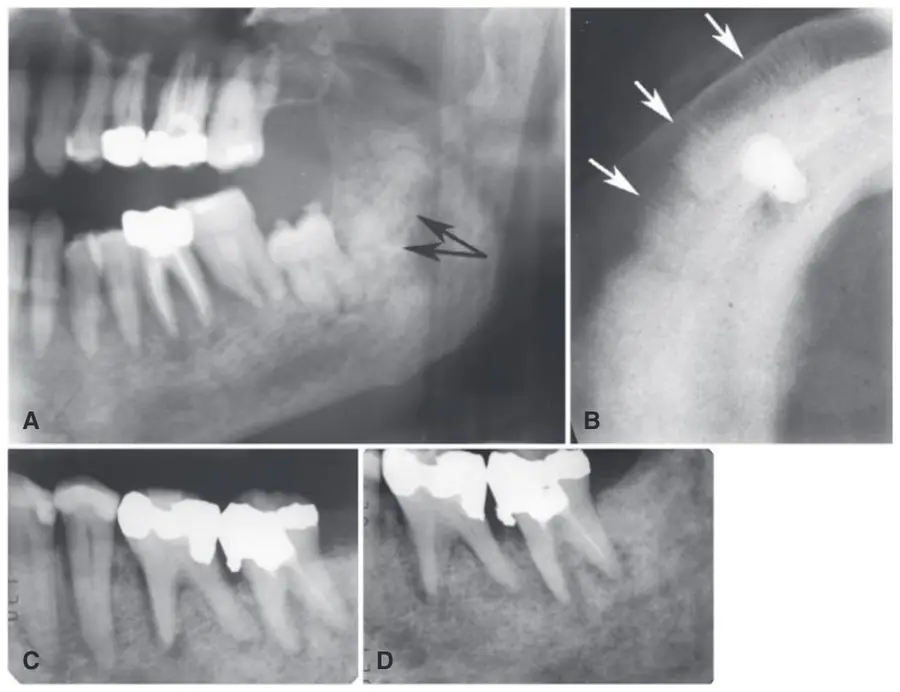

نسخه استخراجشده؛ ترجمه یا تأیید علمی انجام نشده است. وضعیت: captured
متاستاز فرایندی است که در آن کانونهای تازهای از یک نئوپلاسم بدخیم در محلی دور برپا میشوند — و صادقانه باید گفت: «برای بیماران، متاستاز اغلب رویداد پایانی در سیر بالینی سرطان است».

و یک قاعدهی مکانی که باید حفظ کنی: «بیماری متاستاتیک که فکها را درگیر میکند، معمولاً وقتی رخ میدهد که ضایعهی اولیه از نظر آناتومیک پایینتر از ترقوهها باشد.»
و نکتهای که این درس را برای دندانپزشک حیاتی میکند: «در بیشتر موارد، نئوپلاسم بدخیم اولیه از پیش شناسایی شده است — هرچند گاهی حضور یک متاستاز، وجود یک بدخیمی اولیهی خاموش را آشکار میکند.» یعنی گاهی تصویر فک، نخستین خبر از یک سرطان ناشناخته است.
و یک عدد که ابعاد فرایند را نشان میدهد: «کمتر از ۰٫۱٪ سلولهای درون یک نئوپلاسم بدخیم اولیه، توانایی فنوتیپی متاستاز موفق را پیدا میکنند» — و این فرایند اغلب از راه دستگاه عروقی است.
و دو دسته رویداد که سلول بدخیم باید از سر بگذراند:
و محل — با یک منطق عروقی: شایعترین محل، ناحیهی خلفی مندیبل است، بهدلیل خونرسانی غنی این ناحیه از استخوان. سپس ماگزیلا و سینوس ماگزیلاری، سپس کام سخت قدامی و کندیل مندیبل.
و سه محل غیرمنتظره که باید بشناسی: ضایعات متاستاتیک میتوانند در فضای لیگامان پریودنتال — گاهی در آپکس ریشه — پدید بیایند و مقلد بیماری التهابی پریاپیکال یا بیماری پریودنتال باشند؛ یا در پاپیلای یک دندان در حال تکامل.
حاشیه: از نسبتاً واضح تا نامشخص، بدون هیچ کورتکسی. و شکلشان معمولاً لوبولار یا پلیمورفوس است.

و علت این لوبولار بودن، توضیح زیبایی دارد: «بهدلیل ریزمحیط استخوان. نواحی با ریزمحیط مساعدتر تکثیر بیشتری از سلولهای متاستاتیک میبینند، و نواحی با ریزمحیط کممساعدتر تکثیر کمتری — و بنابراین کانتور نواحی مجاور درون یک نئوپلاسم واحد میتواند لوبولار و ناهمگون به نظر برسد.»
ساختار داخلی: بیشتر ضایعات متاستاتیک نسبت به استخوان رادیولوسنتاند، هرچند کانونهای استخوان ترابکولار باقیمانده دیده میشوند. و متاستاز پروستات و پستان میتوانند استئوبلاستها را تحریک کنند و پاسخ استئوبلاستیک با اسکلروز بسازند.
و سیر زمانیاش را بشناس، چون در تصویر پیگیری دیده میشود: «کانون متاستاتیک ممکن است بهصورت چند ناحیهی کوچکتر تخریب استخوان که با استخوان طبیعی از هم جدا شدهاند آغاز شود. با تکثیر و بههمپیوستن جمعیت سلولهای متاستاتیک، این نواحی کوچک با گذشت زمان به یک ناحیهی بزرگتر و نامشخص تبدیل میشوند و فک ممکن است بزرگ شود.»
و اثر بر دندان: متاستاز میتواند به لامینا دورا تهاجم کند و فضای PDL را نامنظم پهن کند. دندانها ممکن است در تودهی بافت نرم شناور به نظر برسند. و یک نشانهی بسیار کاربردی: «ساکتهای کشیدن دندان ممکن است ترمیم نشوند و بزرگتر شوند.» تحلیل دندان — که در نئوپلاسمهای خوشخیم شایع است — اینجا عموماً نادر است.
و مهمترین افتراق این درس — متاستاز در برابر ضایعهی التهابی پریاپیکال: «وقتی ضایعهای درون فضای PDL یک دندان پدید میآید، ظاهرش میتواند یکسان با بیماری التهابی پریاپیکال باشد. نقطهی افتراق این است که پهن شدن فضای PDL ناشی از التهاب به شکل هممرکزتر در آپکس ریشه و با از دست رفتن لامینا دورای مجاور رخ میدهد. در مقابل، بیماری متاستاتیک معمولاً پهن شدن نامنظم فضای PDL ایجاد میکند که میتواند در طول کنارهی ریشه امتداد یابد.»
و سه افتراق دیگر: مولتیپل میلوما — حاشیهاش معمولاً بهتر تعریفشده از کانون متاستاتیک است، کیست ادنتوژنیک عفونیشده — میتواند حاشیهی نامشخص مشابهی داشته باشد، ولی «اگر ضایعات متعدد دیده شوند، احتمال متاستاز بیشتر است»، و تهاجم کارسینوم سلول سنگفرشی سر و گردن که تفکیکش دشوار است و بر پایهی محل اپیسنتر انجام میشود.
نوع سؤال: ساخت کلمه · 7 خانه
حروف منبع: م · ا · س · ا · ز · ت · ت